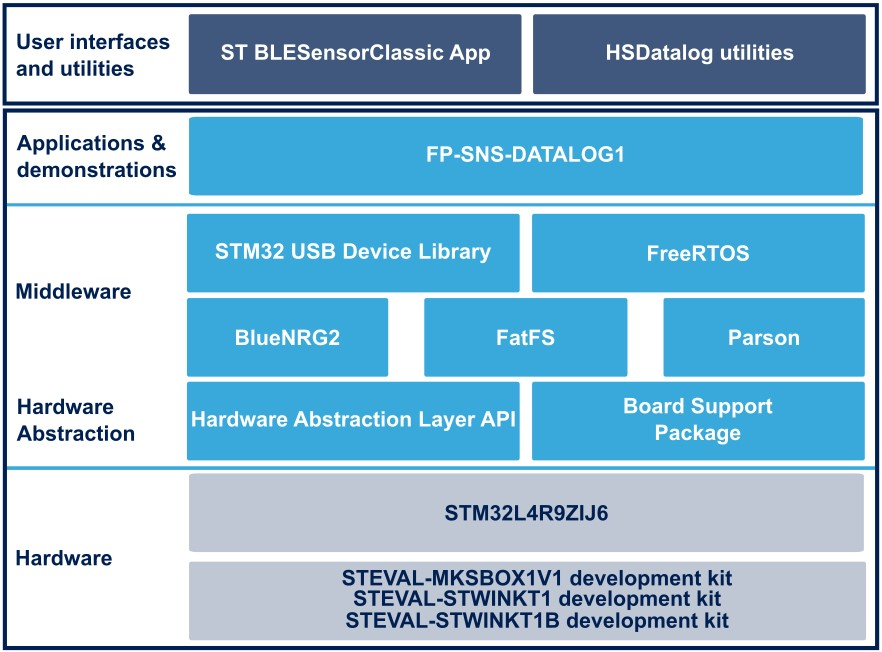

Release Notes for FP-SNS-DATALOG1
Copyright © 2023 STMicroelectronics
Purpose
The FP-SNS-DATALOG1 function pack including High Speed Datalog application for STEVAL-MKSBOX1V1, STEVAL-STWINKT1 and STEVAL-STWINKT1B provides a comprehensive solution to save data from any combination of sensors and microphones configured up to the maximum sampling rate.
The application also allows configuring LSM6DSOX (available in SensorTile.box example) and ISM330DHCX (available in STWIN example) Machine Learning Core unit and reading the output of the selected algorithm.
Sensor data can be stored onto a micro SD card (Secure Digital High Capacity - SDHC) formatted with the FAT32 file system, or streamed to a PC via USB (WinUSBclass) using the companion host software (cli_example) provided for Windows and Linux.
The application can be controlled via Bluetooth using the STBLESensClassic app which lets you manage the board and sensor configurations, start/stop data acquisition on SD card and control data labelling.
To read sensor data acquired using FP-SNS-DATALOG1, a few easy-to-use scripts in Python and Matlab are provided within the software package. The scripts have been successfully tested with MATLAB v2019a and Python 3.10.
This firmware package includes Components Device Drivers, Board Support Package and example applications for the SensorTile.box platform (STEVAL-MKSBOX1V1) and for the STWIN development kit (STEVAL-STWINKT1B).

Here is the list of references to user documents:
Update History
Main Changes
Maintenance release and product update
- Updated HSDPython_SDK: v2 version - same SDK provided in FP-SNS-DATALOG2
- Published also on GitHub
- Added automatic usbDataPacketSize calculation
- Code cleaning and alignment to the latest sensors drivers
- Code style reformatting
- Updated BSP and component drivers
Contents
The components flagged by “” have changed since the previous release. “” are new.
Documentation
| Name | Version | Document |
|---|---|---|
| Doxygen documentation | 1.5.0 | CHM |
Projects
| Name | Version | Document |
|---|---|---|
| STWIN/DATALOG1 | 1.5.0 | Read me |
| STWIN/HSDCore | 1.4.1 | Release notes |
| SensorTile.box/DATALOG1 | 1.1.0 | Read me |
| SensorTile.box/HSDCore | 1.5.1 | Release notes |
Middlewares
| Name | Version | Document |
|---|---|---|
| ST/BlueNRG-2 | 3.2.2 | Release notes |
| ST/STM32 SensorStreaming WCID Class | 1.3.0 | Release notes |
| ST/STM32 USB Device Library | 2.7.1 | Release notes |
| Third_Party/FatFs | 0.12c | Release notes |
| Third_Party/parson | 1.3.0 | Release notes |
| Third_Party/FreeRTOS | 10.3.1 | QSG |
Drivers
| Name | Version | Document |
|---|---|---|
| STM32L4xx CMSIS | 1.7.2 | Release notes |
| STM32L4xx HAL | 1.13.3 | Release notes |
| BSP STWIN | 1.5.0 | Release notes |
| BSP SensorTile.box | 1.3.6 | Release notes |
Components
| Name | Version | Document |
|---|---|---|
| Common | 7.2.1 | Release notes |
| hts221 | 5.5.0 | Release notes |
| iis2dh | 1.1.0 | Release notes |
| iis2mdc | 1.3.0 | Release notes |
| iis3dwb | 1.2.1 | Release notes |
| ism330dhcx | 1.3.0 | Release notes |
| lis2dw12 | 1.4.0 | Release notes |
| lis2mdl | 1.6.0 | Release notes |
| lis3dhh | 1.2.0 | Release notes |
| lps22hh | 1.4.1 | Release notes |
| lsm6dsox | 1.7.0 | Release notes |
| stts751 | 1.3.0 | Release notes |
Utilities
| Name | Version | Document |
|---|---|---|
| HSD Utilities | 2.4.0 | Read me |
| C++ cli_example | 2.5.0 | Release notes |
| C++ nlohmann/json library | 3.7.0 | Read me |
| HSD Python_SDK | 2.2.0 | Release notes |
| matlab | 2.3.0 | Read me |
Known Limitations
- None
Development Toolchains and Compilers
- IAR Embedded Workbench for ARM (EWARM) toolchain V9.20.1 + STLink-V3
- MDK-ARM toolchain V5.37.0 + STLink-V3
- STM32CubeIDE v1.12.1 + STLink-V3
Supported Devices and Boards
- STEVAL-STWINKT1
- STEVAL-STWINKT1B
- STEVAL-MKSBOX1V1
Backward Compatibility
- None
Dependencies
- None
Main Changes
Maintenance release and product update
- Added support to SensorTile.box
- Code cleaning and alignement to the latest sensors drivers
- Added header license neutral
- Added licence files
- Updated STWIN BSP and component drivers and HAL
Contents
The components flagged by “” have changed since the previous release. “” are new.
Documentation
| Name | Version |
|---|---|
| Doxygen documentation | 1.4.0 |
Projects
| Name | Version |
|---|---|
| STWIN/DATALOG1 | 1.4.0 |
| STWIN/HSDCore | 1.4.0 |
| SensorTile.box/DATALOG1 | 1.0.0 |
| SensorTile.box/HSDCore | 1.5.0 |
Middlewares
| Name | Version |
|---|---|
| ST/BlueNRG-2 | 3.2.2 |
| ST/STM32 SensorStreaming WCID Class | 1.3.0 |
| ST/STM32 USB Device Library | 2.7.1 |
| Third_Party/FatFs | 0.12c |
| Third_Party/parson | 1.3.0 |
| Third_Party/FreeRTOS | 10.3.1 |
Drivers
| Name | Version |
|---|---|
| STM32L4xx CMSIS | 1.7.2 |
| STM32L4xx HAL | 1.13.2 |
| BSP STWIN | 1.4.6 |
| BSP SensorTile.box | 1.3.5 |
Components
| Name | Version |
|---|---|
| Common | 7.2.1 |
| hts221 | 5.4.0 |
| iis2dh | 1.0.6 |
| iis2mdc | 1.2.0 |
| iis3dwb | 1.0.6 |
| ism330dhcx | 1.2.0 |
| lis2dw12 | 1.3.0 |
| lis2mdl | 1.5.0 |
| lis3dhh | 1.1.0 |
| lps22hh | 1.3.0 |
| lsm6dsox | 1.6.0 |
| stts751 | 1.2.0 |
Utilities
| Name | Version |
|---|---|
| HSD Utilities | 2.4.0 |
| C++ cli_example | 2.5.0 |
| C++ nlohmann/json library | 3.7.0 |
| HSD Python_SDK | 1.4.0 |
| matlab | 2.3.0 |
Known Limitations
- None
Development Toolchains and Compilers
- IAR Embedded Workbench for ARM (EWARM) toolchain V9.20.1 + STLink-V3
- MDK-ARM toolchain V5.37.0 + STLink-V3
- STM32CubeIDE v1.9.0 + STLink-V3
Supported Devices and Boards
- STEVAL-STWINKT1
- STEVAL-STWINKT1B
- STEVAL-MKSBOX1V1
Backward Compatibility
- None
Dependencies
- None
Main Changes
Maintenance and patch release
- Bugs fixed and updates in HSDCore:
- Redesigned ODR and samplesPerTimestamp settings for HTS221 and LPS22HH: avoid misalignment between JSON configuration and effective sensor configuration
- Fixed samplesPerTimestamp calculation for ISM330DHCX MLC subsensor
- Added end_time and start_time fields in AcquisitionInfo.json
- Avoid to save unwanted HW_tags initial state in AcquisitionInfo.json
- Updated FIFO read command for IIS3DWB
- Bugs fixed and updates in HSDatalog:
- Added Fast FOTA feature
- Updated to BlueST SDK v2
- Redesigned BLE advertisement
- Solved malloc issue in STM32CubeIDE project
- Increased minimum sd buffer size
- Typo fixed in stm32l4xx_it.c: solve compilation error in Linux
- Enabled BLE MTU exchange
- Added end_time and start_time fields in AcquisitionDescriptor
- Reviewed SD card memory check and user button anti-bounce
- Updates in cli_example:
- Added new Raspberry pi 3B cli example
- Rebuilt libraries and exe for Windows (32bit and 64bit), Linux and Raspberry pi 3B
- Updated Python SDK
- Updated requirements.txt - import missing
- Hotfix in nb_hsdatalog_communication notebook
- Removed MIC sensor_type constraints in hsdatalog_to_wav.py (conversion to .wav is available for all sensors)
- Redesigned HSDLink com_manager definition and code cleaning
- Reviewed Error/Log management
- Added missing commands in HSDLink and fixed missing import
- Fixed wrong condition for warning message in cartesiam converter function in HSD_utils
- Updated file_manager and DeviceConfig model in HSD
- Bug fixed in HSD plot function
- Updated STWIN BSP and component drivers
Contents
The components flagged by “” have changed since the previous release. “” are new.
Documentation
| Name | Version | Document |
|---|---|---|
| Doxygen documentation | 1.3.0 | CHM |
Projects
| Name | Version | Document |
|---|---|---|
| HSDatalog | 1.3.0 | Release Note |
| HSDCore | 1.3.0 | Release Note |
Middlewares
| Name | Version | Document |
|---|---|---|
| ST/BlueNRG-2 | 3.2.1 | Release Note |
| ST/STM32 SensorStreaming WCID Class | 1.2.3 | Release Note |
| ST/STM32 USB Device Library | 2.7.1 | Release Note |
| ST/STM32 Connect Library | 2.2.0 | Release Note |
| Third_Party/FatFs | 0.12c | Release Note |
| Third_Party/parson | 1.1.0 | Release Note |
| Third_Party/mbedTLS | 2.16.2 | Read Me |
| Third_Party/FreeRTOS | 10.3.1 | QSG |
Drivers
| Name | Version | Document |
|---|---|---|
| STM32L4xx CMSIS | 1.7.1 | Release notes |
| STM32L4xx HAL | 1.13.0 | Release notes |
| BSP STWIN | 1.4.6 | Release notes |
Components
| Name | Version | Document |
|---|---|---|
| Common | 6.0.0 | Release notes |
| es_wifi | 1.8.0 | Release notes |
| hts221 | 5.3.1 | Release notes |
| iis2dh | 1.0.4 | Release notes |
| iis2mdc | 1.1.1 | Release notes |
| iis3dwb | 1.0.4 | Release notes |
| ism330dhcx | 1.1.1 | Release notes |
| lps22hh | 1.2.1 | Release notes |
| stts751 | 1.1.1 | Release notes |
Utilities
| Name | Version | Document |
|---|---|---|
| HSDatalog utilities | 2.3.0 | Read me |
| cli_example | 2.4.0 | Release notes |
| nlohmann/json | 3.7.0 | Read me |
| Python_SDK | 1.3.0 | Release notes |
Known Limitations
- None
Development Toolchains and Compilers
- IAR Embedded Workbench for ARM (EWARM) toolchain V8.50.9 + STLink-V3
- MDK-ARM toolchain V5.32.0 + STLink-V3
- STM32CubeIDE v1.7.0 + STLink-V3
Supported Devices and Boards
Backward Compatibility
- None
Dependencies
- None
Main Changes
Maintenance and patch release
- Bugs fixed and updates in HSDCore:
- Enabled dynamic ODR selection for both microphones IMP23ABSU and IMP23DT05
- Issue solved: recalculate right sensitivity after changing FS in “XXX_Create_Sensor”
- Issue solved in parse_Status_from_JSON: avoid parsing ucfStatus
- Bug fixed in HTS221 and LPS22HH: use the same ODR for both subsensors also at the startup
- Aligned hts221_app and iis2mdc_app to the latest drivers available
- Code cleaning
- Bugs fixed and updates in HSDatalog:
- Updated hci_tl_interface to solve BlueNRG-2 bug
- Loading an UCF enables MLC subsensor automatically
- New feature: check if SD is full and stop automatically the acquisition
- Code cleaning and refactoring for SDM_CalculateSdWriteBufferSize function
- Handling errors by LED blinking
- Solved warnings in sdcard_manager found in STM32CubeIDE project
- Updated STWIN BSP: Bug fixed in SPI_WIFI_DelayUs function
- Updated HALs, CMSIS and component drivers
- Added new Raspberry pi 3B dll in Utilities/cli_example
- Updated Python SDK
- Updated requirements.txt - import missing
- Hotfix in nb_hsdatalog_communication notebook
- Removed MIC sensor_type constraints in hsdatalog_to_wav.py (conversion to .wav is available for all sensors)
- Redesigned HSDLink com_manager definition and code cleaning
- Added missing commands in HSDLink and fixed missing import
- Fixed wrong condition for warning message in cartesiam converter function in HSD_utils
- Updated file_manager and DeviceConfig model in HSD
- Bug fixed in HSD plot function
Contents
The components flagged by “” have changed since the previous release. “” are new.
Documentation
| Name | Version |
|---|---|
| Doxygen documentation | 1.2.0 |
Projects
| Name | Version |
|---|---|
| HSDatalog | 1.2.0 |
| HSDCore | 1.2.0 |
Middlewares
| Name | Version |
|---|---|
| ST/BlueNRG-2 | 3.2.0 |
| ST/STM32 SensorStreaming WCID Class | 1.2.3 |
| ST/STM32 USB Device Library | 2.7.1 |
| ST/STM32 Connect Library | 2.2.0 |
| Third_Party/FatFs | 0.12c |
| Third_Party/parson | 1.1.0 |
| Third_Party/mbedTLS | 2.16.2 |
| Third_Party/FreeRTOS | 10.2.1 |
Drivers
| Name | Version |
|---|---|
| STM32L4xx CMSIS | 1.7.1 |
| STM32L4xx HAL | 1.13.0 |
| BSP STWIN | 1.4.5 |
Components
| Name | Version |
|---|---|
| Common | 6.0.0 |
| es_wifi | 1.8.0 |
| hts221 | 5.3.0 |
| iis2dh | 1.0.4 |
| iis2mdc | 1.1.0 |
| iis3dwb | 1.0.4 |
| ism330dhcx | 1.1.0 |
| lps22hh | 1.2.0 |
| stts751 | 1.1.0 |
Utilities
| Name | Version |
|---|---|
| HSDatalog utilities | 2.2.1 |
| cli_example | 2.3.0 |
| nlohmann/json | 3.7.0 |
| Python_SDK | 1.2.0 |
Known Limitations
- None
Development Toolchains and Compilers
- IAR Embedded Workbench for ARM (EWARM) toolchain V8.50.9 + STLink-V3
- MDK-ARM toolchain V5.32.0 + STLink-V3
- STM32CubeIDE v1.6.1 + STLink-V3
Supported Devices and Boards
Backward Compatibility
- None
Dependencies
- None
Main Changes
Maintenance release and product update
- Redesigned Machine Learning Core user experience
- Bugs fixed and updates in HSDCore:
- Refactored of ism330dhcx_app.c
- Added ucfLoaded field in subSensorStatus
- Adjusted microphones gain
- Added batteryState field in Performance Status JSON
- Bugs fixed and updates in HSDatalog:
- Refactored usbd_wcid_interface.c
- Updated HSD_USE_FAKE_DATA to HSD_USE_DUMMY_DATA
- Setup automatic allocation of SdWriteBufferSize in base of the effective baud rate
- Deleted refs to HSD_SD_LOGGING_MODE
- Moved sd_diskio from MW to User space
- Deleted unused uuid_ble_service.h
- Switched off orange led during USB streaming
- Modified Attribute_Modified_CB to enable/disable BSP_BC_CmdSend only when needed
- Minor in EXTI2_IRQHandler comment
- Bug fixed for always-on HW TAG 1
- Added a comment on ATT_MTU
- Modified folder tree to support multiple boards in the next releases
- Updated STWIN BSP:
- Updated STWIN_conf_template.h
- Issue solved in BC_CmdMng
- Typos solved in STWIN_WIFI_Init and BSP_SD_Detect_Init
- Updated cli_example
- Bug solved: ucf not read correctly if bigger then DeviceConfig.json
- Added new 64-bit dll
- Added new 64-bit cli_example.exe
- Updated Python SDK
- Updated core module and code cleaning
- Add BSD 3 Clause license disclaimer
- Fixed update device function in command manager (add tagConfig params)
- Issue solved in set label HSDCmd
- Added new wav and to_unico converters
- Updated hsdatalog_check_fake_data.py and hsdatalog_cli.py
Contents
The components flagged by “” have changed since the previous release. “” are new.
Documentation
| Name | Version |
|---|---|
| Doxygen documentation | 1.1.0 |
Projects
| Name | Version |
|---|---|
| HSDatalog | 1.1.0 |
| HSDCore | 1.1.0 |
Middlewares
| Name | Version |
|---|---|
| ST/BlueNRG-2 | 2.0.0 |
| ST/STM32 SensorStreaming WCID Class | 1.2.2 |
| ST/STM32 USB Device Library | 2.6.1 |
| ST/STM32 Connect Library | 2.1.0 |
| Third_Party/FatFs | 0.12c |
| Third_Party/parson | 1.1.0 |
| Third_Party/mbedTLS | 2.16.2 |
| Third_Party/FreeRTOS | 10.2.1 |
Drivers
| Name | Version |
|---|---|
| STM32L4xx CMSIS | 1.7.0 |
| STM32L4xx HAL | 1.12.0 |
| BSP STWIN | 1.4.4 |
Components
| Name | Version |
|---|---|
| Common | 6.0.0 |
| es_wifi | 1.6.0 |
| hts221 | 5.2.2 |
| iis2dh | 1.0.3 |
| iis2mdc | 1.0.1 |
| iis3dwb | 1.0.3 |
| ism330dhcx | 1.0.1 |
| lps22hh | 1.1.1 |
| stts751 | 1.0.2 |
Utilities
| Name | Version |
|---|---|
| HSDatalog utilities | 2.2.0 |
| cli_example | 2.2.0 |
| nlohmann/json | 3.7.0 |
| Python_SDK | 1.1.0 |
Known Limitations
- None
Development Toolchains and Compilers
- IAR Embedded Workbench for ARM (EWARM) toolchain V8.50.5 + STLink-V3
- MDK-ARM toolchain V5.31.0 + STLink-V3
- STM32CubeIDE v1.5.1 + STLink-V3
Supported Devices and Boards
Backward Compatibility
- None
Dependencies
- None
Main Changes
First official release
- Main features for HSDatalog example:
- High-rate (up to 6 Mbit/s) data capture software suite
- Compatible with ST BLESensor app for system setup and real-time control
- Compatible with UNICO for Machine Learning Core available in ISM330DHCX component
- Hardware and software labelling features
- Python module and C++ real-time control and data analysis
- Dedicated Python SDK
- Host developer’s API enables integration into any data science design flow
- Timestamping technique for all sensors
- FatFS third-party FAT file system module for small embedded systems
- FreeRTOS third-party RTOS kernel for embedded devices
- STWIN low-level BSP drivers
Contents
The components flagged by “” have changed since the previous release. “” are new.
Documentation
| Name | Version |
|---|---|
| Doxygen documentation | 1.0.0 |
Projects
| Name | Version |
|---|---|
| HSDatalog | 1.0.0 |
| HSDCore | 1.0.2 |
Middlewares
| Name | Version |
|---|---|
| ST/BlueNRG-2 | 2.0.0 |
| ST/STM32 SensorStreaming WCID Class | 1.2.2 |
| ST/STM32 USB Device Library | 2.6.1 |
| ST/STM32 Connect Library | 2.1.0 |
| Third_Party/FatFs | 0.12c |
| Third_Party/parson | 1.1.0 |
| Third_Party/mbedTLS | 2.16.2 |
| Third_Party/FreeRTOS | 10.2.1 |
Drivers
| Name | Version |
|---|---|
| STM32L4xx CMSIS | 1.7.0 |
| STM32L4xx HAL | 1.12.0 |
| BSP STWIN | 1.4.2 |
Components
| Name | Version |
|---|---|
| Common | 6.0.0 |
| es_wifi | 1.6.0 |
| hts221 | 5.2.2 |
| iis2dh | 1.0.3 |
| iis2mdc | 1.0.1 |
| iis3dwb | 1.0.3 |
| ism330dhcx | 1.0.1 |
| lps22hh | 1.1.1 |
| stts751 | 1.0.2 |
Utilities
| Name | Version |
|---|---|
| HSDatalog utilities | 2.1.0 |
| cli_example | 2.1.0 |
| nlohmann/json | 3.7.0 |
| Python_SDK | 1.0.0 |
Known Limitations
- None
Development Toolchains and Compilers
- IAR Embedded Workbench for ARM (EWARM) toolchain V8.50.5 + STLink-V3
- RealView Microcontroller Development Kit (MDK-ARM) toolchain V5.31.0 + STLink-V3
- STM32CubeIDE v1.4.2 + STLink-V3
Supported Devices and Boards
Backward Compatibility
- None
Dependencies
- None